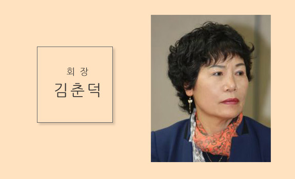

여성어업인,
수산업의 미래를 열다!

한국여성어업인연합회 홈페이지 방문을 진심으로 환영합니다. 한국여성어업인연합회는 수산업에 종사하거나 경영하는 여성어업인이 서로 협력하여 어촌생활과 영어활동 의욕을 고취하고, 어촌사회에서 여성의 권익과 지위를 향상시켜 어촌의 복지증진과 지역사회 발전에 기여함을 목적으로 합니다.
여성어업인이 전체 어가인구중 51%(2016년 기준)를 차지하고 있을 정도로 어촌 및 수산업에서 중요한 역할을 하고 있습니다. 그럼에도 불구하고 여성 어업인이 가정 내 남성의 조력자로 인식되거나 가사일 병행으로 어업종사에 애로를 느끼는 등 어업 현장에서 체감하는 고충이 적지 않습니다. 이에 우리 한여련은 관련법 개정을 위한 의견을 제시하고, 여성어업인 관련정책 을 적극 활용하는 등 권익신장을 위한 일에 앞장서고 있습니다.
우리의 역할이 확대되고 있는 시점에서, 힘을 내야 여성어업인의 위상도 드높이고, 더 나아가 어촌의 복지증진과 수산업 경쟁력 강화에도 힘을 실을 수 있다고 생각됩니다. 한여련에서는 전문화된 교육을 통해 더욱더 여성어업인에 대한 관심을 높이고 지원을 하겠습니다.
전국의 여성어업인들 다같이 힘냅시다!
제2대 한국여성어업인연합회 회장